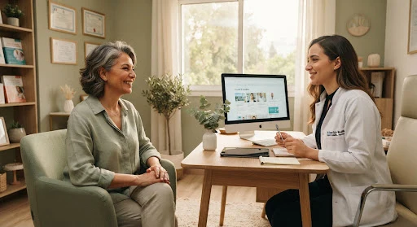
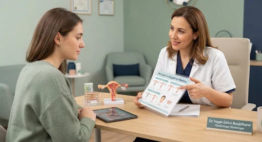

Formation et expertise
Diplômée de la Faculté de médecine de Tunis, le Dr Hager Gabsi Boujelbane exerce en gynécologie obstétrique. Le cabinet accueille les patientes pour une consultation adaptée à leur situation.
Dr Hager Gabsi Boujelbane
Consultations au Centre médical Olivia, sur rendez-vous. Une écoute attentive, des explications claires et des soins bienveillants adaptés à chaque étape de votre vie de femme.
 Accueil sur rendez-vous
Accueil sur rendez-vousLe cabinet vous accueille à L’Aouina – Hay Wahat, au Complexe Olivia Centre.
Diplômée de la Faculté de médecine de Tunis, le Dr Hager Gabsi Boujelbane exerce en gynécologie obstétrique. Le cabinet accueille les patientes pour une consultation adaptée à leur situation.
Écoute, explications claires et respect de la confidentialité accompagnent chaque consultation.
Un accompagnement adapté aux différentes étapes de la santé des femmes.
Découvrez les domaines de consultation du Dr Hager Gabsi Boujelbane à L’Aouina, Tunis.
 Obstétrique & suivi
Obstétrique & suiviUn suivi adapté à chaque grossesse, avec un temps d’échange sur vos questions et les prochaines étapes.
 Imagerie gynécologique
Imagerie gynécologiqueL’échographie peut contribuer à l’évaluation gynécologique ou au suivi de grossesse, selon votre situation.
 Prévention & santé
Prévention & santéFaire le point sur votre santé et discuter des examens de prévention adaptés à votre âge et à vos antécédents.
 Choix & contraception
Choix & contraceptionUne consultation pour comparer les méthodes et choisir avec la gynécologue une contraception adaptée.
 Projet de grossesse
Projet de grossesseUn temps d’échange avant une grossesse pour aborder votre histoire médicale et les questions du couple.
 Cycle & symptômes
Cycle & symptômesDes douleurs ou des changements du cycle méritent d’être abordés, en particulier lorsqu’ils perturbent le quotidien.
 Transition & équilibre
Transition & équilibreFaire le point sur les changements qui vous gênent et discuter d’un accompagnement adapté à votre situation.
Visuels d’illustration : ils ne représentent pas les locaux ni l’équipe du cabinet.
Le cabinet vous accueille sur rendez-vous au Centre médical Olivia.
Complexe Olivia Centre, 1er étage, C1-8, rue Cheikh Mohamed Neifer, Cité les Palmiers (à côté de Monoprix Zayatine), L’Aouina, Tunis 2036
Voir sur Google Maps ↗Consultez les témoignages et les évaluations sur la fiche Google du cabinet.
Des repères sur la santé des femmes, adaptés des publications du cabinet à L’Aouina, Tunis.
Découvrir les articles →
Bouffées de chaleur, sommeil, changements du cycle : un rendez-vous pour faire le point.
Lire l’article →
Une consultation confidentielle pour discuter des méthodes et de vos besoins.
Lire l’article →Un temps pour parler de votre récupération et de vos questions après la naissance.
Lire l’article →Retrouvez les fiches du Dr Hager Gabsi Boujelbane dans les annuaires médicaux et sur Google Maps.
Les articles proposent des informations générales et indiquent leurs sources et leur date de publication. Ils ne remplacent pas une consultation ni un diagnostic personnalisé. Pour une question sur votre situation ou pour signaler une information à corriger, contactez le cabinet.
Le cabinet de gynécologie et d’obstétrique du Dr Hager Gabsi Boujelbane accueille les patientes sur rendez-vous au Complexe Olivia Centre, 1er étage, C1-8, rue Cheikh Mohamed Neifer, Cité les Palmiers, à Hay Wahat (L’Aouina, Tunis). Pour une consultation gynécologique, un suivi de grossesse ou une question concernant la santé des femmes, contactez le cabinet afin de convenir d’un rendez-vous.
Le cabinet est situé à L’Aouina et peut également être recherché par les patientes venant des secteurs voisins d’Aïn Zaghouan, La Soukra ou La Marsa. Vérifiez votre trajet avant le déplacement.
Découvrir les consultations gynécologiques · Consulter l’adresse et les horaires · Prendre rendez-vous
Ouvrir l’itinéraire du cabinet sur Google Maps · Appeler le cabinet au 93 482 052
Archives de presse — 12 avril 2020
Cette publication évoque une prise de parole du Dr Hager Gabsi à propos des conditions de prise en charge et de travail à l’hôpital pendant la crise du Covid-19. Elle est présentée dans leur contexte de 2020.
Les consultations se font sur rendez-vous. Appelez le cabinet au 93 482 052 pour convenir d’un créneau. Retrouvez les horaires du cabinet.
Le cabinet se situe au Complexe Olivia Centre, 1er étage, C1-8, rue Cheikh Mohamed Neifer, Cité les Palmiers (Hay Wahat), à côté de Monoprix Zayatine. Consultez les informations d’accès ou ouvrez l’itinéraire Google Maps.
Le cabinet du Dr Hager Gabsi est situé à L’Aouina. Depuis Aïn Zaghouan ou La Soukra, utilisez Google Maps pour calculer l’itinéraire depuis votre position. Vous pouvez appeler le cabinet pour préciser l’accès au premier étage.
Pour faciliter l’échange avec votre gynécologue, rassemblez les éléments utiles dont vous disposez.
Précisez le motif du rendez-vous et signalez un besoin particulier lors de votre appel.
Apportez vos anciens comptes rendus, résultats d’examens et bilans utiles.
Notez les dates de vos dernières règles, vos symptômes et les questions à poser.
Préparez la liste des médicaments, les allergies connues et les informations utiles sur vos antécédents.
Vos questions, vos inquiétudes et vos choix ont leur place en consultation. L’écoute, les explications et le respect de votre confidentialité font partie de l’accompagnement.
Vous pouvez en discuter avec le cabinet avant le rendez-vous. Votre confort et votre confidentialité restent prioritaires.
Il n’est pas nécessaire d’en réaliser sans demande du professionnel. Apportez les résultats que vous avez déjà.
Voir toutes les questions →Consultations de gynécologie et obstétrique à L’Aouina, Tunis.
Appeler le cabinetEnvoyer un e-mail